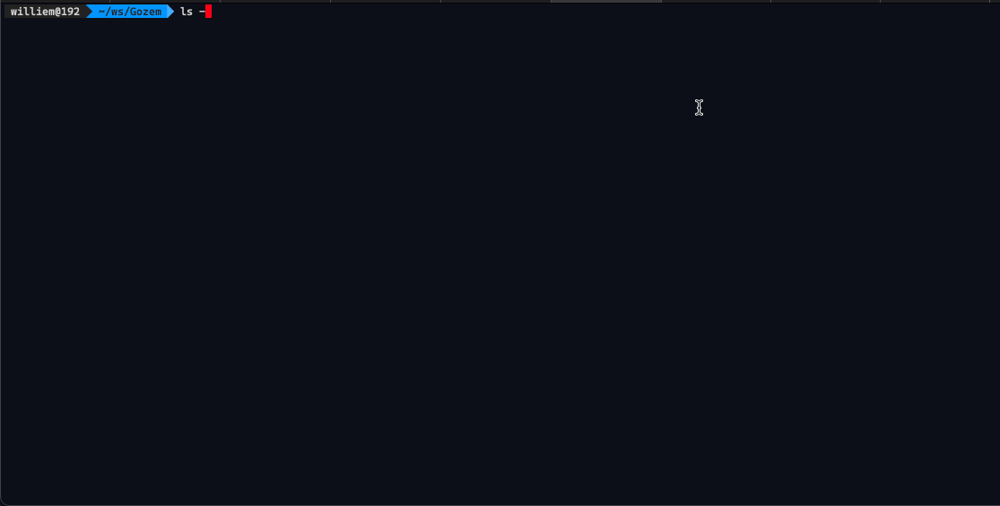

A Gozem app to track packages delivery.
Gozem tracker quick docs
Gozem tracker allows users, drivers and admin to manage a package tracking system
The project is divided in two part/folders:
- ./gtracker-server : this directory contains the nodejs/express server app
- ./gtracker-client : this directory contains the angular client app
Server app
Client app
Docker
You have two options to run the app.
./gtracker-server) ENVIRONMENT=dev
# Absolute path to the server app folder
BASE_PATH=/projects/ws/Gozem/gtracker-server
# Absolute path to the client app folder
CLIENT_BASE_PATH=/projects/ws/Gozem/gtracker-client
# Path to the docker compose file
COMPOSE_FILE=$BASE_PATH/docker/docker-compose.yml
# Docker compose project name
COMPOSE_PROJECT_NAME=package-tracker
# Path to the server app Dockerfile
DOCKERFILE_NAME=$BASE_PATH/docker/server.dockerfile
# Path to the client app Dockerfile
CLIENT_DOCKERFILE_NAME=$BASE_PATH/docker/client.dockerfile
# Mongo DB credentials
DB_USER=gtracker
DB_HOST=127.0.0.1
DB_PASSWORD=gtracker
DB_NAME=gtracker
DB_LOCAL_PORT=7017 # exposed port when using docker
DB_PORT=27017
# Mongo DB storage docker container folder
DB_STORAGE=$BASE_PATH/docker/data/db
# Server app exposed port from the docker container
NODE_DOCKER_EXPOSE_PORT=3000
# Server app port and server app docker container internal port
NODE_APP_PORT=3000
# Server app folder
APP_FOLDER=$BASE_PATH/
# Client app exposed port from the docker container
ANGULAR_DOCKER_EXPOSE_PORT=4200
# Client app folder
ANGULAR_APP_FOLDER=$CLIENT_BASE_PATH/
./gtracker-client/src/environments/environment.tsyarn installyarn installyarn dev or yarn start, the app will be running on the port configured previouslyng serve, the app will be runnning on the default port http://localhost:4200Before going ahead, if you updated the server port in the client app folder ./gtracker-client/src/environments/environment.ts you need to set it back to 3000, during the build, the 3000 is replaced with the correct server port from env file.
Configs and files related to docker are located in the server folder (./gtracker-server) and (./gtracker-server/docker) thus the following commands need to be run from that folder (./gtracker-server)
you can run the following commands to manage the app
make compose_up to spin up a full environment composed of the db, the server and the client.make compose_down to down the environmentbuild_image to build the server imagerun_container to run the server containerstop_container to stop the server containerremove_container to remove the server containerrerun_container to remove and run a new server containerbuild_run to build the server image and run a new containerbuild_client_image to build the client imagerun_client_container to run the client containerstop_client_container to stop the client containerremove_client_container to remove the client containerrerun_client_container to remove and run a new client containerbuild_client_run to build the client image and run a new containergo to the server folder (./gtracker-server) run docker-compose --env-file .env up -d
Here are other useful docker commands, you'll need to replace the placeholder ${XXX} with the corresponding
docker build --tag ${IMAGE_NAME} . -f ./docker/server.dockerfile to build the server imagedocker run --name '${CONTAINER_NAME}' -p ${NODE_DOCKER_EXPOSE_PORT}:${NODE_APP_PORT} -d ${IMAGE_NAME} to run the server containerdocker stop ${CONTAINER_NAME} to stop the server containerdocker rm ${CONTAINER_NAME} to remove the server containerdocker build --tag ${IMAGE_NAME_CLIENT} ${CLIENT_BASE_PATH} -f ./docker/client.dockerfile --build-arg NODE_APP_PORT=${NODE_APP_PORT} to build the client imagedocker run --name '${CONTAINER_NAME_CLIENT}' -p ${ANGULAR_DOCKER_EXPOSE_PORT}:4200 -d ${IMAGE_NAME_CLIENT} to run the client containerdocker stop ${CONTAINER_NAME_CLIENT} to stop the client containerdocker rm ${CONTAINER_NAME_CLIENT} to remove the client containerOpen your browser and go to the app, typically http://localhost:4200 and Use the app accordingly to the business case specification
If you encounter some errors with docker,
My name is Williem Babalola. A software engineer with more than 10 years of experience. Skilled in Full Stack development, problem-solving, and software architecture with a focus on creating innovative solutions. yo@williems.com Thanks
